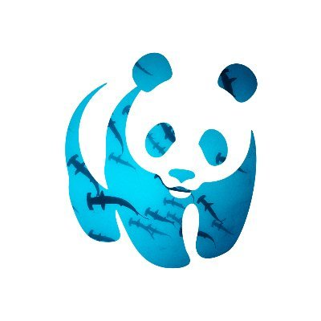

The World Wildlife Fund
With fossil records dating back 400 million years, sharks have outlived the dinosaurs and many other forms of life currently on earth. There are more than 1,000 species of sharks and rays, with new species discovered every year. These majestic top predators that are so essential to the natural order of marine ecosystems now face their most severe threat from overfishing. Many species are threatened with extinction, with some families of rays such as sawfishes in peril. While sharks and rays have been an irreplaceable resource for coastal communities in the developing world for centuries, this unique balance is in danger of being lost forever. With our oceans severely degraded, restoring sharks is key to improving the resilience of these water bodies to climate change. While sharks' diverse range of species adds complexity to our conservation efforts, the dwindling numbers of these amazing creatures from overfishing and demand for their fins and meat increases the urgency of the task. Through our multi-pronged strategies, and guided by the Global Priorities for Conserving Sharks and Rays - A 2015-2025 Strategy, we strive to restore the balance between humans and sharks.
 Adopt A Shark Donation